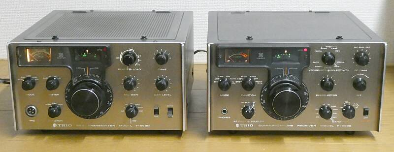
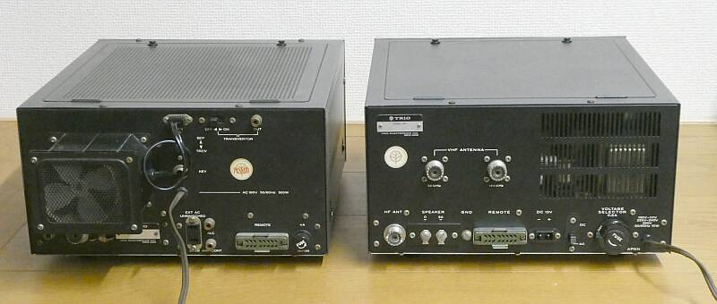

オールソリッドステートかつセパレートでというラインアップ 第２世代です
初代は、ＪＲ-５９９ ＴＸ-５９９です
トランシーバの進化により、セパレート機にそのメリットがなくなったこともあって、
ＴＲＩＯ／ＫＥＮＷＯＯＤではこのラインが、セパレート型製品の最後となってしまいました
１９７５年から１９８０年にかけて販売されました |
 |
|
 |
|
Ｒ-５９９S
１．８ＭＨｚ帯からＷＡＲＣバンドを除くＨＦ６バンド＋１０ＭＨｚ帯（ＷＷＶ）＋ＣＢ帯＋５０ＭＨｚ帯＋１４４ＭＨｚ帯とカバーします
受信モードも、ＳＳＢ／ＣＷ、ＡＭ、ＦＭ（当時ですからワイド・・・±１０KHｚ）とオールモードに対応
２７０Ｗ ｘ １４０Ｈ Ｘ ３１０Ｄ ５．７Ｋｇ とコンパクトな筐体に仕上がっています
クリスタルフィルタもＳＳＢ／ＣＷ／ＡＭすべて実装されています
ハード構成は、先代のＪＲ-５９９と同じですが、明らかにレベル設計に変化があります
従来、オール・ソリッドステート受信機、ＪＲ-５９９もそうですが、真空管式モデルのレベル設計をそのまま半導体に置き換えた設計がほとんどだったと思います
本機では、真空管式のようにＲＦ段での利得を多くとらず、クリスタルフィルタを通過した後の、すなわち狭帯域化したＩＦで利得を稼ぎ、ＡＧＣをバッチリかけるような設計になっています
狙いは、混変調など近接の強い信号の影響を減らすため・・・・真空管の受信機に比べ、半導体を採用した受信機は、混変調に弱い、強力な信号を受信すると歪が気になるなどと言われてきた歴史があり、ここでいやいやそんなことはありませんよという、きちんと半導体に合わせた設計をした製品が出てきた、ということになると思います
結果として、ＩＦノイズが増える・・・一見S/Nの低下に思える雰囲気になった、といえばそうです
この時点で、ＹＡＥＳＵの製品が静かで、ＴＲＩＯ／ＫＥＮＷＯＯ製品は、ノイズが多く弱い信号に対して感度が悪いという評価もあったように思いますが、実際は、そんなことはありません・・・下段実測値参照
強電界条件に強いＴＲＩＯ／ＫＥＮＷＯＯ受信機となりました
Ｔ-５９９D
３．５～２９．７MHｚ ＳＳＢ／ＣＷ １００Ｗ ＡＭ ４０W 送信機
ドライバ段と終段に真空管を採用したハイブリッド機で、私の認識では、先代のＴＸ-５９９と大きな違いはないと
実は、このＴ-５９９Ｄ ＪＲＣ ＮＳＤ-５０５の電源接続のためのコネクタ ＨＲＳ Ｓ-１３１６-ＣＴＡが入手できず、市場にリーズナブルな価格で出回っているＴＸ／Ｔ-５９９から取り外して使おうとして入手したもので、分解（部品取り）する前に、ＪＲＣ 純正電源装置が入手できたので、本機は宙に浮いてしまいました
ここからが、いつもの槌より柄のほうが重たいお話しに展開
Ｒ-５９９Ｓを入手することになってしまいました
次は、Ｓ-５９９でしょうか |
|
受信感度の実測値です
| ＢＡＮＤ（ＭＨｚ） |
ＣＷ／ＳＳＢ
ＲＦ信号のＯＮ／ＯＦＦで
S/N１０ｄｂが得られる信号強度 |
ＣＷ／ＳＳＢ
参考
カタログ値 |
| １．８ |
０．２μV |
０．５μV |
| ３．６ |
０．２μV |
０．５μV |
| ７．１ |
０．２μV |
０．５μV |
| １４．１ |
０．２μV |
０．５μＶ |
| ２１．１ |
０．２μＶ |
０．５μＶ |
| ２８．６ |
０．２μＶ |
１．５μＶ |
| ５０．１ |
０．３μＶ |
１．５μＶ |
| １４４．１ |
０．３μＶ |
２．０μV |
余談ですが、５０／１４４ＭＨｚの受信は、少々厄介
例えば下段Ａバンド ５０．０～５１．７ＭＨｚ は良いのですが
上段Ｂバンド ５１．７～５３．４ＭＨｚという範囲の周波数読取には悩みます
１ｓｔＩＦが、２８．０～２９．７ＭＨｚですから、仕方ないと言えばそうですが |
|
|